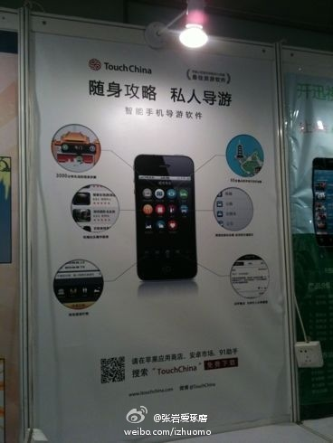

Joey是高富帅啊，广而告之。//@Byford亲启: 我只能说你太幸福了！ //@孔霸天:哈哈！我有三个老板，高富帅是@沈卓立TouchChina 屌丝是@Byford亲启 文艺青年@薛文丞JamesSit 粘板子这种事当然是屌丝老板去做了！@老台小着呢:听@孔霸天 姐姐说这个展台是@TouchChina 的老板@沈卓立TouchChina 亲自布展的，于是我下班后特地顺路来看看。 
 //@Byford亲启: 我只能说你太幸福了！ //@孔霸天:哈哈！我有三个老板，高富帅是@沈卓立TouchChina 屌丝是@Byford亲启 文艺青年@薛文丞JamesSit 粘板子这种事当然是屌丝老板去做了！
//@Byford亲启: 我只能说你太幸福了！ //@孔霸天:哈哈！我有三个老板，高富帅是@沈卓立TouchChina 屌丝是@Byford亲启 文艺青年@薛文丞JamesSit 粘板子这种事当然是屌丝老板去做了！